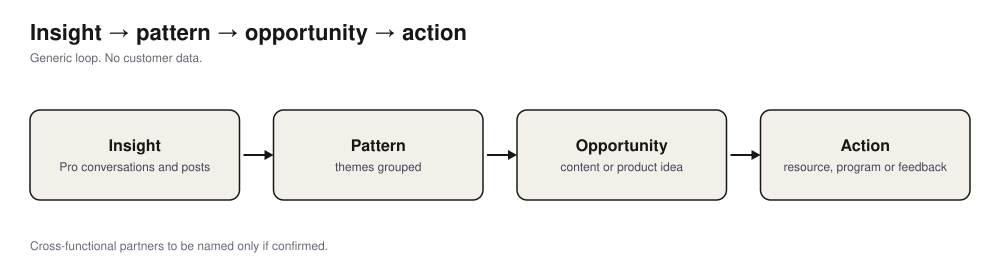
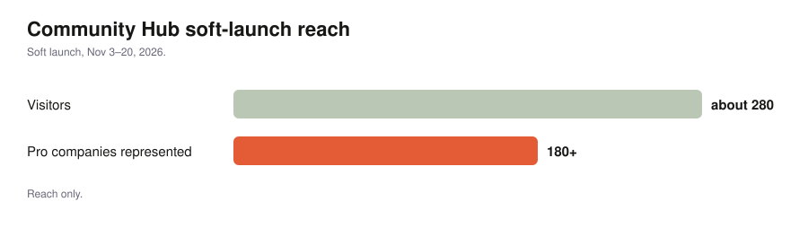

Inherited the build and drove the next phase.
I took responsibility for extending the existing experience, preparing the rollout, clarifying the roadmap, and making the work visible to leadership.
I inherited an existing Community Hub and led its extension into a phased rollout—connecting content operations, customer insight, analytics, feedback, and recurring refresh workflows.
Pros were already helping each other in groups, live sessions, podcasts, and conversations. But useful threads, trainings, templates, and stories were distributed across formats and difficult to find when someone needed them.
The Hub creates a customer-facing destination organized around real needs: discover what is useful, search by topic, learn from peers, join live training, watch on demand, and share what should come next.
Customer conversations, posts, and program feedback reveal recurring questions and language.
The experience groups resources around what Pros are trying to accomplish—not around internal org charts.
Analytics, feedback, quality review, and recurring content refresh turn launch into an operating cadence.
I took responsibility for extending the existing experience, preparing the rollout, clarifying the roadmap, and making the work visible to leadership.
The system published more than 200 trade templates while holding nearly 100 submissions that did not meet quality standards, alongside 130+ videos and a growing story bank.
I interview Pros, study recurring needs, and translate patterns into resources, program discovery, research outreach, and product concepts.
Content updates, trending topics, analytics, and feedback are designed as an operating cadence rather than a one-time launch push.
I wrote and presented the product walkthrough, connecting individual features to the customer problem they solve.
Early reach is useful context. Retention, repeat usage, engagement quality, and downstream customer value still need time and cleaner measurement.


Search, practical topics, resources, training, podcasts, and community discussion create multiple paths to the same underlying need.
Content volume is not the goal by itself. Review and clear standards protect the usefulness of the destination.
Trending topics, featured content, training updates, feedback, and analytics create a rhythm for learning and iteration.
About 280 visitors representing more than 180 Pro companies reached the Hub during the early soft-launch period. That establishes reach; it does not yet prove durable engagement or business impact.